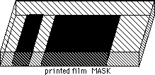
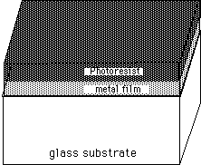
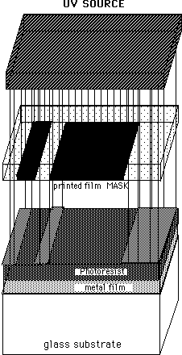
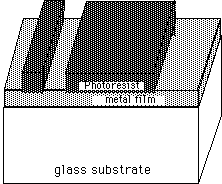
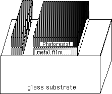
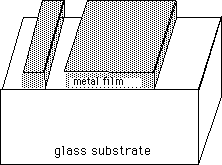

In this lab we will transfer patterns onto the device you are engineering. We will make use of some of the techniques which are also used to make microelectronics such as computer chips. Life may be like a box of chocolates, but microelectronic is like a layer cake with decorations on each layer. It all starts with a substrate; for your device this will be a piece of glass, but for microelectronics it is usually a thin wafer sliced from a single crystal cylinder of silicon. One or more layers of some useful material is deposited or grown on the substrate, then patterned (the cake decorations)--more on that in a moment. For example, if we deposit a metal layer, we could pattern it by cutting away all except for a few narrow strips which would then serve as wires. Then we could deposit an insulator on top of the metal, and pattern it to cut some holes in it down to touch our wires. In depositing a second metal layer on top of that, a connection would be made through these holes to the first metal wire. Then we could pattern the second metal layer into another set of wires. Chip designers also make patterns of impurities in the silicon; these dopants form transistors. These patterns can be so small that millions of them can fit in a square centimeter!
So, microelectronics is enabled partially by our ability to make patterns on a microscopic size scale. How is this done? In this lab the patterns were designed on a Macintosh computer, using a graphics program similar to MacDrawWe use L-Edit, which is available on the Public Fileserver in the unsupported keyserved folder, but more sophisticated in the way it handles small size features and multiple layers. They are then printed on a ultra high resolution laserwriter. The resolution of this printer is 4000 dpi (dots per inch), which corresponds to 6 microns (micro meters) per dot. This is an order of magnitude better than that of most laserwriters on campus. You could put about a dozen such dots across the diameter of a human hair. This may be small, but state of the art microelectronic designs are smaller yet--they incorporate features which are more than an order of magnitude smaller. That is too small to make or see with visible light, even under a microscope; instead they use ultraviolet light or electron beams (see questions 3 and 4 below). To make life easier, our features will be much larger than this, with sizes of about 50 microns and up (somewhat smaller than an ordinary human hair diameter). The printer puts the pattern onto plastic film rather than paper because film is more dimensionally stable (stretches and shrinks less) and because it is easier to then transfer the pattern onto our sample. We call this film a mask, for reasons that will become apparent. In the example below, we will show just two features: a short rectangular wire and a square pad. Here's what the mask for this example would look like. The

dark area represents laserwriter toner on the bottom of the mask. In the end, we want wires in our metal film to follow this same pattern. The next step is to transfer this pattern onto our sample. This is done by a technique called photolithography. In our lab this is similar to "contact printing" in photography. First we need to make our sample sensitive to light. The sample is cleaned and covered with a puddle of photosensitive liquid called photoresist.

The sample is then spun at high speeds. Excess photoresist is thrown off the edge of the sample by centrifugal force. The thickness of the remaining layer is determined by the photoresist viscosity, the surface tension, and the spin speed. For the photoresist we use, spinning at 4000 RPM results in a uniform film 1.3 microns thick, with thickness variations of only about 1 percent (130 angstroms!) in the center region. The photoresist is then baked to drive off excess solvents.

Now we are ready to transfer the pattern to the photoresist. The mask is pressed tightly against the photoresist on the sample, and the sandwich is exposed to ultraviolet light. In this figure we show the mask displaced from the photoresist for clarity. Where there are dark features on the mask, the UV light is blocked (masked) and the photoresist is unexposed. Where the mask is clear, the UV hits the photoresist underneath and causes chemical changes. In some photoresists these changes are as simple as breaking long polymer chains into shorter ones (called chain sission). The shorter chains are then easily washed away in a developer solution.
The changes in our photoresist involve a more complex photochemical reaction--a degradation by UV light of a dissolution inhibitor, but the net effect is the same: where UV light has hit, the photoresist dissolves away when we pour a puddle of developer (a basic solvent) on it.

The pattern is now reproduced in the photoresist, but we still need to transfer it to our metal film. We do this by etching. The entire sample is placed in an acid bath. Where the photoresist is missing, the exposed metal is etched away, but where photoresist remains it protects the metal and "resists" etching by the acid (hence the name photo-resist).


With the pattern now reproduced in our metal film, we can use an organic solvent (acetone) to dissolve away the remaining photoresist. The final result as shown here is just the wire and pad we wanted.
THE CLEANROOM
Some of the wires you will be making are thinner than a human hair. If a hair or dust particle falls on your sample over the photoresist, it could block the UV light where you wanted it to go and make an unwanted wire (perhaps "shorting out" your device). For this reason we need to control the amount of dust (and hair) in the room in which we do this processing. Learning to make very clean rooms has been critical to the microelectronics industry (as it is to medical research also). The Thayer School of Engineering Microengineering Laboratory is a class 100 microelectronics grade cleanroom. This means that in each cubic foot of air there are less than 100 particles of 1/2 micron size. That's pretty clean when you consider that just walking around you shed several MILLION particles a minute.
To protect the cleanroom from you and your particles, and to protect you from its chemicals, you will need to put on special garments over your street clothes. In addition, there are special high efficiency filters in the ceiling always bringing in clean air to sweep away any particles you generate.
Pre-lab Assignment:
LAB PROCEDURE:
NOTE: The two groups will follow a somewhat different process. Each has its advantages and disadvantages.
Group 1: You will be doing photolithography first and then electrodeposition. You will pattern a chromium film which has been deposited on glass by a technique called sputtering. It looks much like an ordinary mirror to start with. You will then do electrodeposition on this chrome film. Etching the pattern will be easier for your group, but where the chrome lines are narrow, your electrodeposition may be less effective.
Group 2: You will be doing electrodeposition first, then photolithography. You will do your electrodeposition on a chromium film which has been deposited on glass by a technique called sputtering. It looks much like an ordinary mirror to start with. The film you deposit will probably be more uniform than that of the other group because the electric current flowing to your flat un-patterned sample is reasonably uniform. Then you will be doing photolithography on the film you deposited and the chrome film under it. While your electrodeposition may be better than the other group, the double layer will make your photolithography harder. In fact, we only recently learned how to do a good job with this system.
SCHEDULING:
The lithography lab will be done in six sub groups--three the first week and three the second. You will need to sign up for which group you want, with no more than six to a group. The lithography lab will meet in the Engineering building at the entrance to the microengineering lab cleanroom, 223 Cummings.
1A: 2-5pm, Thursday, January 30; 2-6pm, Thursday, February 6.
1B: 7-10pm, Thursday, January 30; 2-6pm, Thursday, February 6.
1C: 2-5pm, Friday, January 31; 2-6pm, Thursday, February 6.
2A: 2-5pm, Thursday, February 6; 2-6pm, Thursday, January 30.
2B: 7-10pm, Thursday, February 6; 2-6pm, Thursday, January 30.
2C: Friday AM, February 7 or TBA; *2-6pm, Thursday, January 30.
*to be arranged--this is winter carnival day
LAB PROCEDURE:
You will be shown how to complete the following in the cleanroom:
|
Back To IMPS Intro |
Go To IMPS Testing Lab |